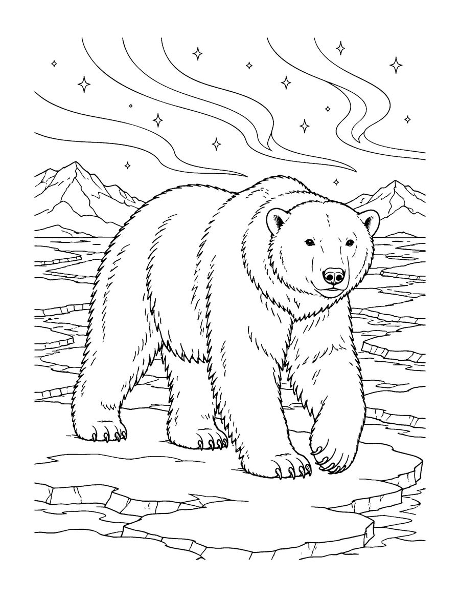
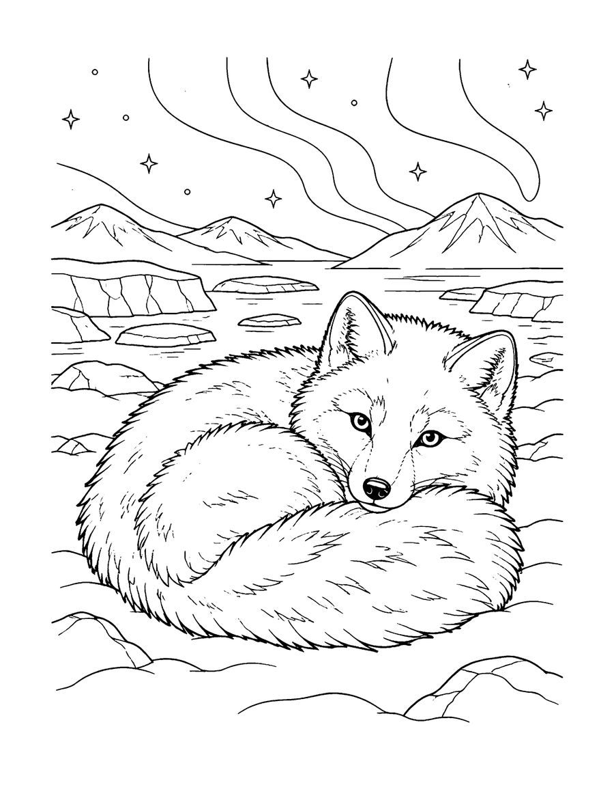
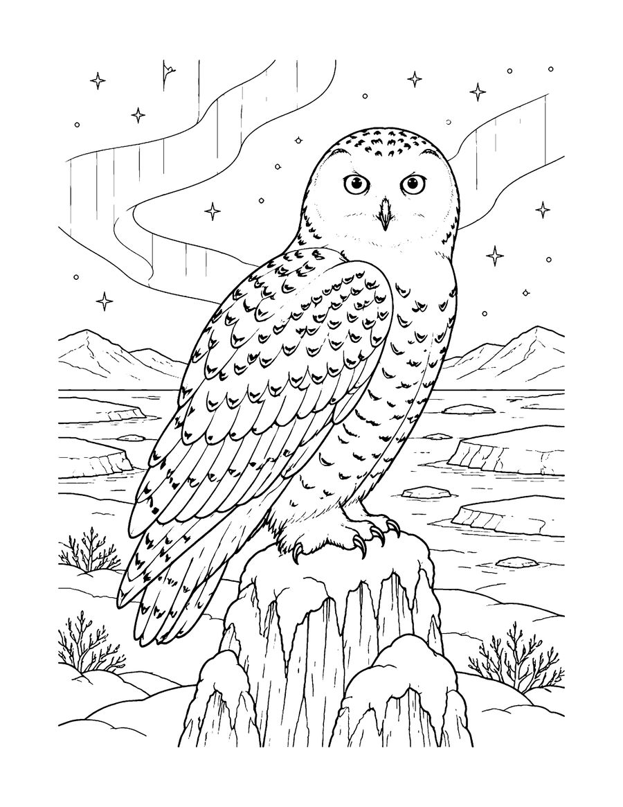
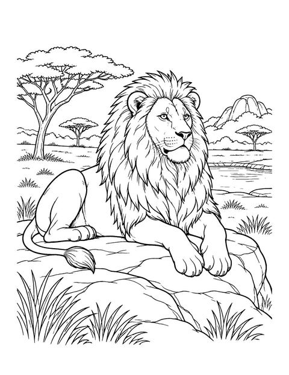
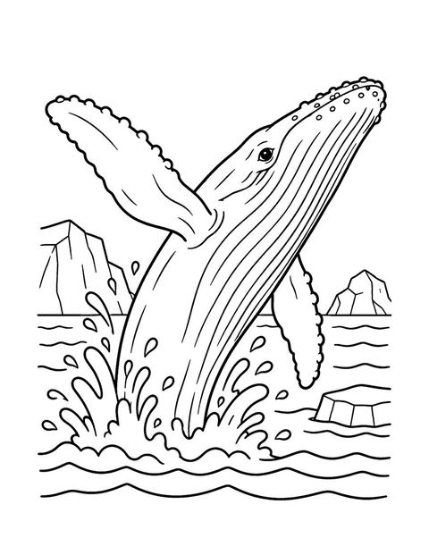
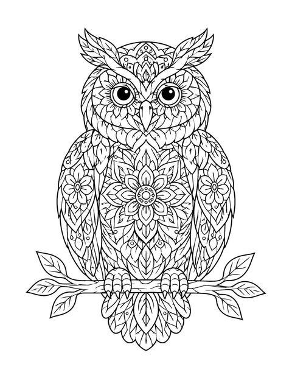
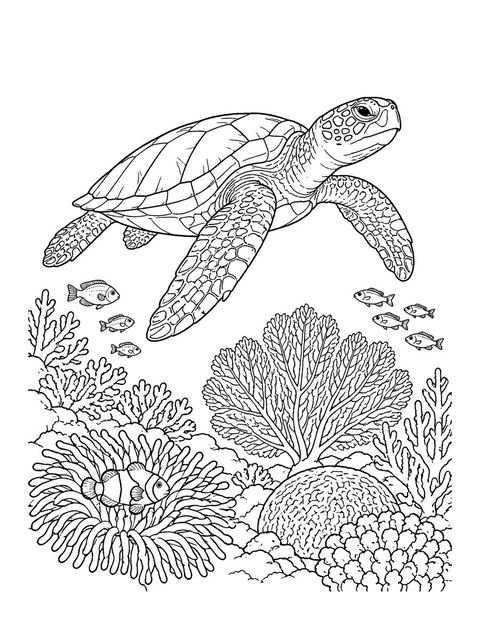

Bring the frozen north to your table with these free arctic animals coloring pages. The three pages come from Arctic Wild, a realistic coloring book for teens and adults, and show a polar bear on sea ice, an arctic fox curled up in the snow and a snowy owl perched on a frozen stump.
Realistic wildlife pages reward patience. Look for the texture of thick fur and feathers and build it up with layers of light strokes. Polar bears have black skin under their white-looking fur, and arctic foxes change the color of their coats with the seasons. Cool blues, soft grays and a little warm yellow make a lovely winter palette, while colored pencils are especially good for fur. These pages are a cozy activity for winter evenings, a nature lover gift or a calm break for a science class. Print on US Letter paper at 100% scale. The full book has 40 arctic animals, from wolves and orcas to narwhals and puffins.
Your 3 free coloring pages

Arctic Fox
Download free page (PDF)
Snowy Owl
Download free page (PDF)Printing tips
- Print at 100% scale on US Letter (8.5 x 11 in) paper. For A4, choose “Fit to page”.
- Use heavier paper (65 lb / 120 gsm or more) if you color with markers, so ink does not bleed through.
- Download the PDF first, then print from your PDF viewer for the sharpest lines.
Get all 40 pages
These 3 pages are a taste of Arctic Wild (Teens & adults). The full coloring book has 40 pages, ready to print or color in a book.
More free coloring pages

Free Safari Animal Coloring Pages
Teens & adults

Free Whale and Sea Otter Coloring Pages
All ages

Free Mandala Animal Coloring Pages
Teens & adults

Free Coral Reef Coloring Pages for Adults
Teens & adults